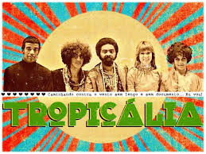

Boas-vindas a
 Quero conhecer!
A Tropicália, também conhecida como Tropicalismo, foi um movimento cultural brasileiro que surgiu na década de 1960, tendo seu auge entre 1967 e 1968. Esse movimento abrangeu várias expressões artísticas, como a música, o cinema, o teatro e as artes plásticas, e teve como principal característica a mistura de elementos da cultura brasileira tradicional com influências estrangeiras, especialmente do rock e da música pop. Fonte: Site Toda Matéria